Your bot team at a glance.
SquadChart welcomes you and gives you a short message to send to your orchestrator. After you send it, drop team-intake.md into the chat.
If a saved team is already there when you drop a new file, you’ll be asked before it is replaced. If you cancel, the saved team stays as it is.
SquadChart maps up to 10 bots. If the file has more than that, it stops and asks you to type Start over to try again. Any team you already saved is left as it is.
The first time, it may ask: Can I install my chart tools (Mermaid and Chromium)? Choose Yes or No. The tools are installed only if you say Yes.
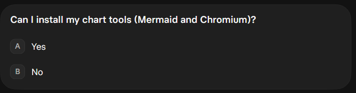
Once the file is in, a few questions may come before the charts.
If some of your handoffs name bots that aren’t in the file, you’ll be asked whether to leave them all off the charts, or keep them all as outside notes.
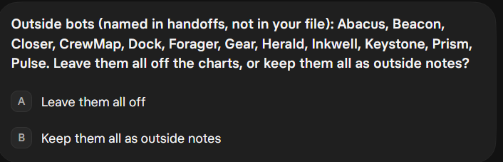
Then it always asks Use groups? If No, lines follow Reports to. Choose Yes or No. You can’t switch this mid-way. To answer the other way later, type Start over. It’s designed to ask first: Delete your saved team? Choose Yes, delete it, then share the team again and answer Use groups? the other way.
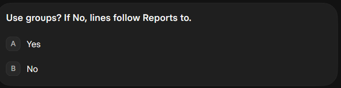
If no bot coordinates the team, it may also ask you to name an orchestrator, or it will route groups to you. You can change this later.
Then your first Org Chart and Directory appear, along with team-directory.md. Charts can take several minutes to render, so give them a little time. A short summary looks like this: 10 bots · 37 handoff rows · 0 outside notes.
The first charts may also list missing titles, for example Title (Not set): Bot Smith, and flag items that need your attention, for example:
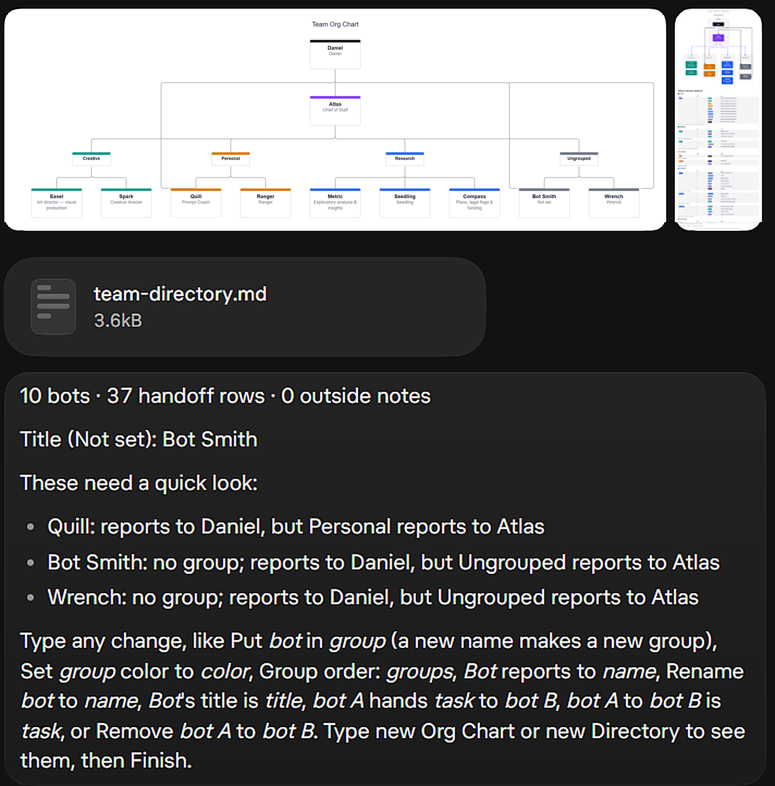
After those first charts, you can type a change whenever you like — one change, or several in the same message.
You might type:
SquadChart confirms each change with a Changed: line, for example:
It then reminds you that you can type another change, or type new Org Chart or new Directory to see them, then Finish.
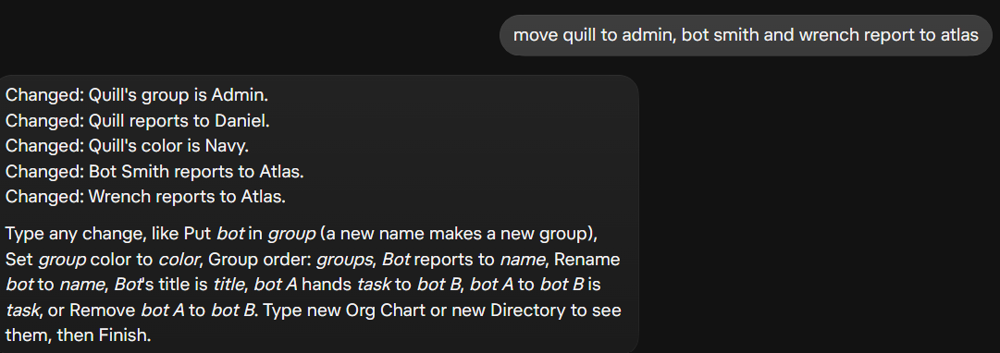
Type new Org Chart, new Directory, Finish or Start over by itself. For everything else, you can list several changes in the same message.
Here’s another example, with three changes together:
What a group is. A group is a set of bots that work in the same area, like Creative, Research, or Personal. With groups on, each group gets its own section and color on the Org Chart, and each group reports to someone, such as your orchestrator or you. Bots that aren't in a group sit together under Ungrouped. The orchestrator sits in the Admin row. With groups on, a bot sits there when you Put or Move it into Admin; a bot that only reports to you stays in its group. With groups off, a bot that reports to you is treated as an admin peer.
You use groups to sort your team at a glance. Type Put Easel in Creative to add a bot to a group, and a new name makes a new group. You can also set a group's color, change the order of the groups, and say who each group reports to. With groups off, there are no sections, and the lines on the chart simply follow who each bot reports to.
Use groups? is asked once, up front. Here’s how the same sample team looks each way. These are the high-resolution sample charts (the in-image footer is cropped off so it doesn’t clash with the page footer). The first-render screenshot above and the Finish screenshot later are also groups on.
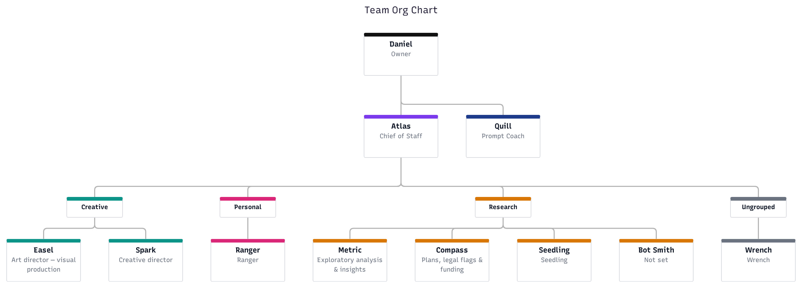
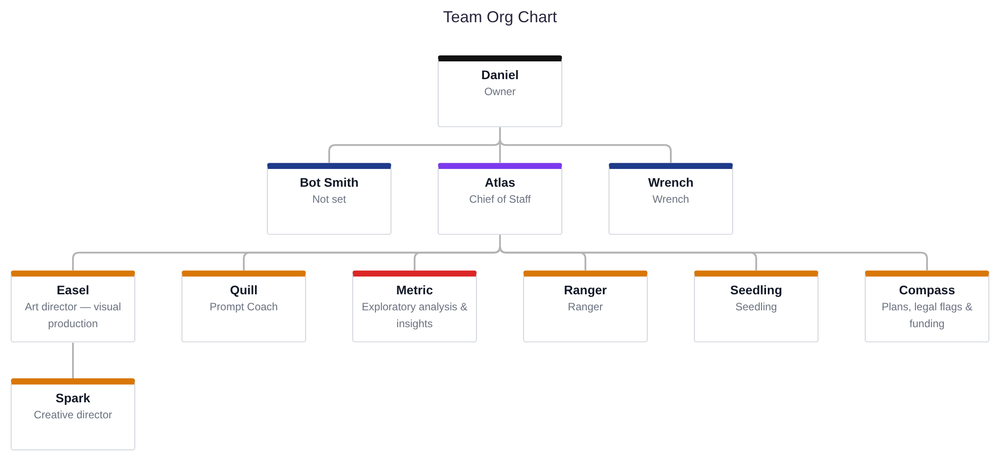
When groups are off, Group order and Put or Move into a group make no change; SquadChart says groups are off. You can still reorder bots that share a parent, for example: Move Seedling to the left of Metric. With groups on, Bot order and a move left or right must name the group.
The Directory changes the same way. With groups on, bots are listed under their groups. With groups off, they're laid out by who they report to. Turning groups on or off changes only how the team is laid out. It doesn't change your handoffs or how many there are. The charts here are examples from different snapshots, so the two views, including the summary counts, won't match each other exactly.
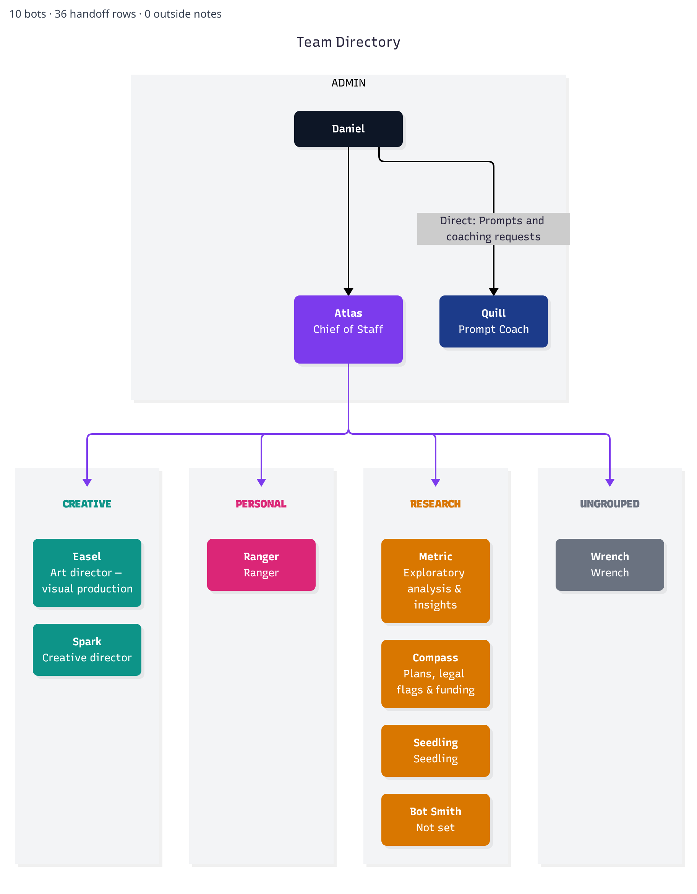
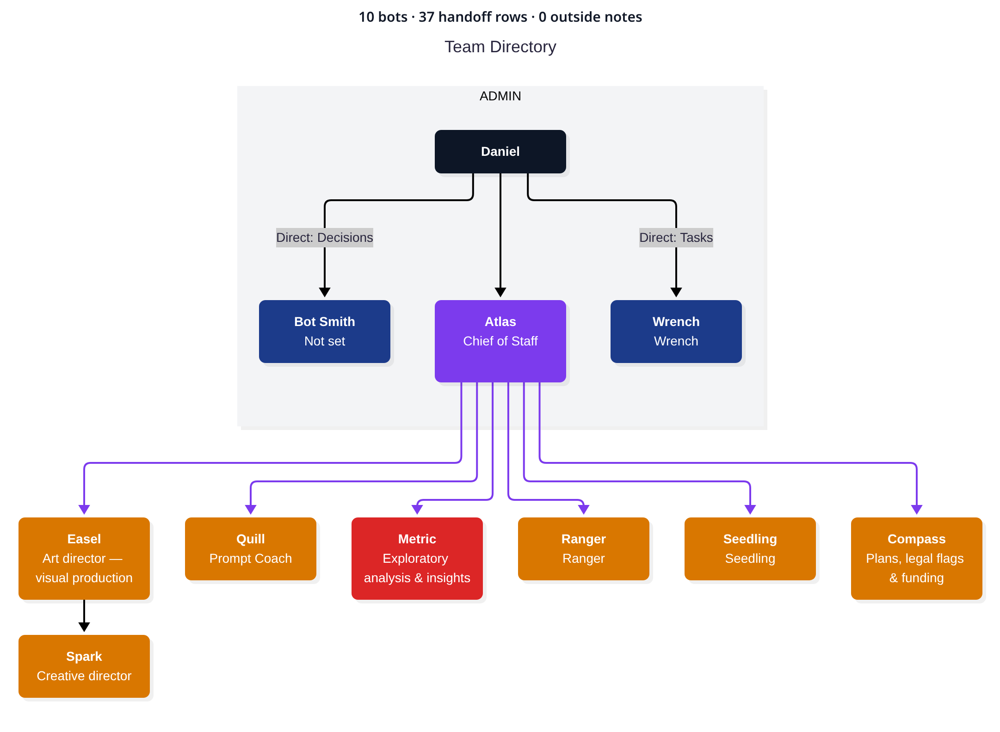
These are the changes you can type after your first charts. One example each, using the sample team on the charts above: Daniel, Atlas, Quill, Easel, Spark, Ranger, Metric, Compass, Seedling, Bot Smith, and Wrench.
Put bot in group — A new name makes a new group.
With groups on, you can also put a bot in Admin.
Move bot into group
Set group color to color — You can type the color as a word. You can also ask for a shade or a hex value.
Group order: groups — List every group but Admin. Admin can’t be reordered this way.
Group reports to owner's name
Bot reports to name
Rename bot to name
Bot's title is title
Bot coordinates the team
Bot A hands task to bot B
Add bot A to bot B is task — This also works without Add.
Make bot A to bot B via orchestrator (or direct)
Remove bot A to bot B
With groups on, name the group. You can list the bots in a group, first to last, or move one bot to the left or right of another.
Admin peers who report to the owner can be reordered in both modes. The orchestrator stays in the admin row, so a groups-on example moves Quill, not Atlas.
With groups off, a move left or right doesn’t name a group. Bot Smith and Wrench are the peers who report to Daniel.
When you’re ready, type Finish by itself.
You get your Org Chart, the Directory (the image and team-directory.md), and team-changes.md. The summary in this Finish shot is 10 bots · 37 handoff rows · 0 outside notes. The org chart shows the updates from the change above: Quill now sits in the admin row with Atlas.
It also says: Saved until you type Start over. To change more, type an entry as before, like Put bot in group, then Finish to re-render.
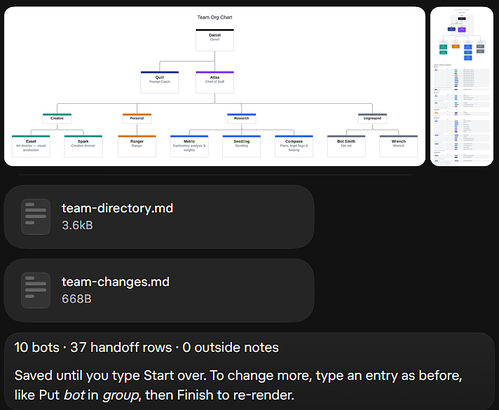
For a closer look at an Org Chart and a Directory roster, you can also use the cropped sample charts in the groups on and groups off section above.
Your team is saved until you type Start over. You can keep editing and type Finish again whenever you like.
Type Start over by itself. It asks: Delete your saved team? Choose Yes, delete it, or Cancel.
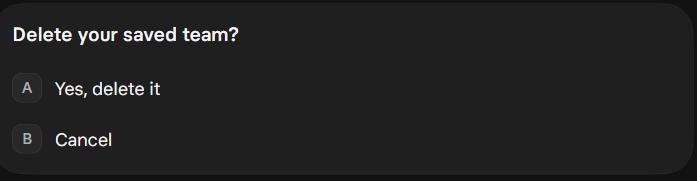
Yes, delete it clears the saved team, and you’re back at the welcome. Cancel leaves the team as it is.